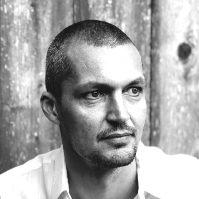

KeyPeople
Brøgger · CEO
Based in San Francisco, Morten has over 20 years of experience in the technology industry and extensive go-to-market and SaaS experience, spanning the US and European markets. Most recently Morten was the CEO at Huddle, a content collaboration platform serving large professional services firms as well as UK and US governments. His previous experience includes leadership roles at Syniverse, MACH, Sunrise Switzerland, TDC Denmark, and ATEA.
Alan Duric · Co-founder, CTO/COO
Alan is an experienced entrepreneur with a strong background in real- time communications. He’s the co-founder and CTO of Telio Holding ASA that is now listed on the Oslo stock exchange, and Camino Networks, which was acquired by Skype/eBay. Alan is an early pioneer of VoIP technologies and a driving force in the standardization of the speech that led to the WebRTC standard, which revolutionized how real-time communication products are built today. 
Rasmus Holst · CRO
Throughout his career, Rasmus has delivered growth, exits, restructuring, strategic direction and customer retention across start-ups and established multi-million-dollar businesses. He joins Wire from Huddle, where he served as the company’s Chief Operating Officer. Rasmus has served in senior leadership roles at Syniverse, Oracle, Intec, Digiquant, and Nokia.